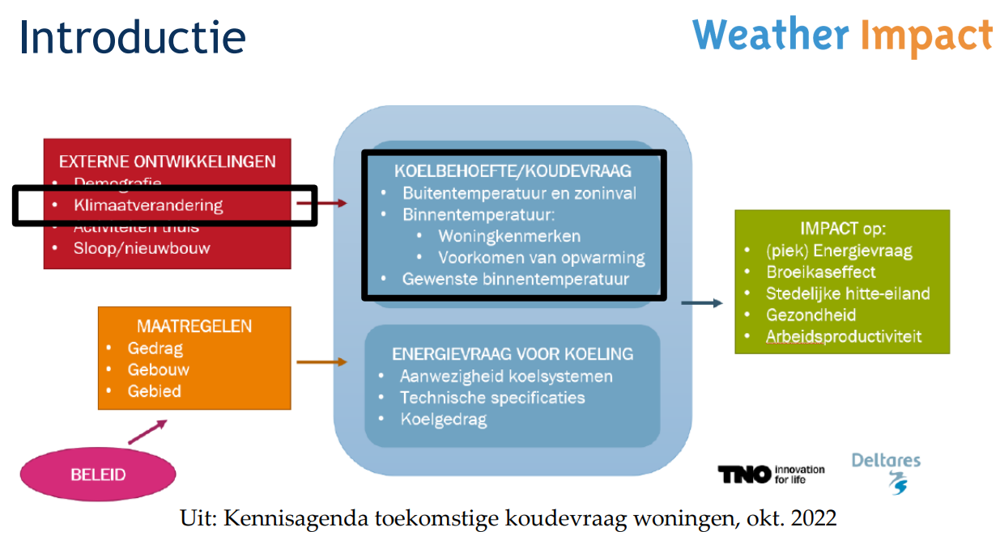

Klimaat Adaptatie
Onze WC-eend
= CO2 reductie
Negatieve Spiraal
CO2-Uitstoot >> Klimaat Verandering >> Verlies Biodiversiteit >> Minder CO2 Opname
<<<<<<<<<<<<<<<<<<<<<<<<<<<<<<<<<<<<<<<<<<<<<<<<<<
Hoger EnergieVerbruik
Klimaat Verandering >> Meer HitteStress >> Meer EnergieVerbruik in Zomer >> Meer CO2 Uitstoot
Stelling
Aandacht voor klimaatadaptatie en biodiversiteit is voor onze leefbaarheid net zo essentieel als CO2-reductie.

CO2 uitstoot >> Klimaat Verandering
De belangrijkste oorzaak is de uitstoot van broeikasgassen door menselijke activiteiten — vooral CO₂ door het verbranden van fossiele brandstoffen (kolen, olie, gas), ontbossing en industrie. Deze gassen houden warmte vast in de atmosfeer, waardoor de aarde opwarmt.
Klimaat Verandering >> Leefomgeving
De belangrijkste gevolgen voor de leefomgeving zijn:
- Extremer weer – meer hittegolven, overstromingen en droogtes
- Stijgende zeespiegel – door smeltende ijskappen, bedreigt kustgebieden
- Verlies aan biodiversiteit – dier- en plantensoorten raken hun leefgebied kwijt
- Verslechterde luchtkwaliteit – meer fijnstof en ozon door hogere temperaturen
- Voedsel- en watertekorten – door veranderende neerslag en misoogsten
- Gezondheidsrisico's – verspreiding van tropische ziektes, hittestress
Voor Nederland specifiek zijn overstromingsrisico's en droogte in de zomer de meest urgente bedreigingen.
Verlies aan biodiversiteit
is zeer belangrijk voor onze leefomgeving, omdat ecosystemen als een netwerk werken — als één schakel wegvalt, heeft dat kettingeffecten.
Directe gevolgen voor mensen:
- Voedselproductie – bijen en andere bestuivers zijn essentieel voor gewassen; zonder hen valt de oogst weg
- Schoon water – gezonde ecosystemen filteren en zuiveren water natuurlijk
- Medicijnen – veel geneesmiddelen zijn afgeleid van planten en dieren die dreigen te verdwijnen
- Klimaatregulatie – bossen en oceanen absorberen CO₂; minder biodiversiteit = minder opname
Indirect:
- Ecosystemen worden instabiel en kwetsbaarder voor ziektes en plagen
- Economische schade aan landbouw, visserij en toerisme
- Eenmaal uitgestorven soorten komen nooit meer terug
Kort gezegd: biodiversiteit is de basis waarop al het leven — inclusief het onze — steunt. Het verlies ervan tast direct onze voedselzekerheid, gezondheid en leefbaarheid aan.
Kunnen we klimaatverandering terugdraaien
Volledig terugdraaien is waarschijnlijk niet meer mogelijk, maar we kunnen de opwarming wel afremmen en stabiliseren. Het onderscheid is belangrijk:
Wat niet meer terug te draaien is:
- Een deel van de temperatuurstijging is al "ingebakken" in het systeem
- Uitgestorven soorten komen niet terug
- Sommige gesmolten ijs en gestegen zeespiegel zijn onomkeerbaar op menselijke tijdschaal
Wat we wél kunnen doen:
- Uitstoot drastisch verminderen – overstap naar zonne- en windenergie, minder vlees, minder vliegen
- CO₂ uit de lucht halen – door herbebossing en nieuwe technologieën (carbon capture)
- Natuur herstellen – ecosystemen zoals veengebieden en oceanen kunnen CO₂ opslaan
- Aanpassen – dijken, hittebestendige steden, droogteresistente gewassen
De realiteit: Wetenschappers zijn het erover eens dat we met snel en grootschalig handelen de ergste scenario's kunnen voorkomen. Het doel van het Klimaatakkoord van Parijs — maximaal 1,5°C opwarming — is nog haalbaar, maar vergt zeer ingrijpende maatregelen.
Kortom: terugdraaien niet, maar de schade beperken en een leefbare aarde behouden — dat is zeker nog mogelijk.
Is KlimaatAdaptatie noodzakelijk ?
Ja, absoluut. Klimaatadaptatie is onvermijdelijk — zelfs als we morgen alle uitstoot stoppen, zijn de gevolgen van de huidige opwarming al decennialang voelbaar. We moeten dus zowel uitstoot verminderen (mitigatie) als ons aanpassen (adaptatie).
Waarom adaptatie noodzakelijk is:
- De klimaatverandering die al in gang is gezet komt hoe dan ook — we kunnen het tempo vertragen, niet stoppen
- Zonder aanpassing worden de schade en kosten enorm veel groter
- Kwetsbare groepen (ouderen, armen, laaggelegen gebieden) worden het hardst getroffen
Voorbeelden van adaptatie:
- 🌊 Wateroverlast – dijken verhogen, waterpleinen, meer groen in steden
- 🌡️ Hitte – meer bomen en schaduw in steden, hittebestendige gebouwen
- 🌾 Landbouw – droogteresistente gewassen, ander teeltseizoen
- 🏥 Gezondheid – hitteplannen, muggenbestrijding bij oprukkende tropische ziektes
- 🏘️ Ruimtelijke ordening – niet meer bouwen in overstromingsgevoelige gebieden
Voor Nederland specifiek is adaptatie extra urgent:
- 60% van Nederland is kwetsbaar voor overstromingen
- Droge zomers bedreigen landbouw en natuur in Brabant en andere regio's
- Stedelijke hitte wordt een groeiend probleem
Kortom: mitigatie en adaptatie zijn twee kanten van dezelfde medaille. Wie alleen op één inzet, is niet goed voorbereid op de toekomst.
Wat moeten we met onze woning doen?
Voor je woning zijn er twee doelen: uitstoot verminderen (mitigatie) én bestand zijn tegen klimaatgevolgen (adaptatie).
🔧 Uitstoot verminderen:
- Isoleren – muren, dak, vloer en ramen; grootste impact op energieverbruik
- Van gas af – warmtepomp of hybride warmtepomp als vervanging voor de cv-ketel
- Zonnepanelen – zelf energie opwekken
- Zonneboiler – warm water via zonne-energie
🌡️ Beschermen tegen hitte:
- Buitenzonwering (screens, luiken) — veel effectiever dan gordijnen
- Groendak of gevelbegroeiing — koelt de woning en omgeving
- Lichte kleuren voor dak en gevels
🌧️ Beschermen tegen wateroverlast:
- Tegels uit de tuin vervangen door gras, planten of waterdoorlatende bestrating
- Regenton of regenwateropvang aanleggen
- Drempel bij deuren verhogen in risicogebieden
💰 Financieel:
- De Nederlandse overheid geeft subsidies via het ISDE-programma voor warmtepompen, isolatie en zonnepanelen
- Veel gemeenten bieden extra lokale subsidies
- Een energielabel verhoogt de woningwaarde
Waar beginnen? Laat een energieadvies uitvoeren — dan weet je precies wat voor jouw woning de meest effectieve en voordelige stap is.
Wat kunnen we als individu met onze omgeving doen?
Naast je eigen woning kun je ook in je directe omgeving een verschil maken. Kleine acties samen hebben een groot effect.
🌿 Groen en biodiversiteit:
- Leg een natuurvriendelijke tuin aan — inheemse planten, wilde bloemen, geen gifbestrijding
- Plaats een insectenhotel of vogelnestkast
- Vervang tegels door planten (tegelwippen) — ook goed tegen wateroverlast
- Leg een moestuin aan — minder voedseltransport, meer bewustzijn
💧 Water:
- Gebruik een regenton voor het besproeien van de tuin
- Vermijd verharde oppervlakken zodat regenwater in de bodem kan zakken
- Sluit je aan bij lokale waterberging-initiatieven
🚗 Mobiliteit:
- Kies vaker voor de fiets of OV in plaats van de auto
- Deel ritten of gebruik deelauto's
- Kies bij aanschaf voor een elektrisch voertuig
🤝 Samen met de buurt:
- Sluit je aan bij een energiecoöperatie — samen zonnepanelen of windenergie opwekken
- Organiseer of doe mee aan buurtinitiatieven voor vergroening
- Praat met je gemeente over klimaatplannen en lever input
🛒 Bewuste keuzes:
- Eet minder vlees, meer plantaardig
- Koop lokaal en seizoensgebonden
- Verminder afval — minder consumeren is de beste stap
Kortom: je hoeft het niet alleen te doen. Juist de combinatie van individuele keuzes + samenwerking in de buurt maakt het verschil. In onze omgeving zijn al veel mooie lokale initiatieven actief waar je bij aan kunt sluiten!